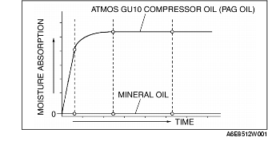

Refrigerant system service cautions
Handling Insufficient Refrigerant Level
• If an insufficient refrigerant level is detected at troubleshooting, do not charge (add) the refrigerant. Because an accurate amount of refrigerant cannot be determined from the pressure indicated on the manifold gauge, never charge the refrigerant. If there is too much or too little refrigerant from the refilling, there may be secondary problems such as damage to the refrigerant cycle parts, or a decrease of cooling performance. Therefore, if it is determined that the refrigerant level is insufficient, completely remove refrigerant from the refrigerant cycle and refill with refrigerant to the specified amount.
Handling Compressor Oil
• Use only ATMOS GU10 compressor oil for this vehicle. Using a PAG oil other than ATMOS GU10 compressor oil can damage the A/C compressor.
• Do not spill ATMOS GU10 compressor oil on the vehicle. A drop of compressor oil on the vehicle surface can eat away at the paint. If oil gets on the vehicle, wipe it off immediately.
• ATMOS GU10 compressor oil (PAG oil) has a higher moisture absorption efficiency than the previously used mineral oil. If moisture mixes with the compressor oil, the refrigerant system could be damaged. Therefore, install caps immediately after using the compressor oil or removing refrigerant system parts to prevent moisture absorption.
• If the refrigerant gas is completely discharged from the system for reasons such as a malfunction during A/C operation, repair or replace the malfunctioning part, charge the refrigerant to the specified amount and always add 60 ml {60 cc, 2.03 fl oz} of compressor. If the compressor oil is not adequately replenished, the A/C compressor may quickly deteriorate, abnormal noise may develop, cooling performance may be affected or, in the worst case, the A/C compressor may seize.
